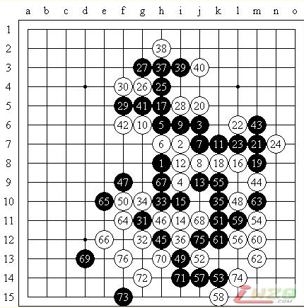

QQ上的一个对局，感觉还不错……
#1 QQ上的一个对局，感觉还不错…… 作者：有志青年 发表时间：2007-6-11 12:36:53
2007年6月11日，QQ五子棋三手交换五手两打1室2桌，长星局（不换），5A＝i8，镀金时代（黑）负屏蔽（白）（Time）

最近比较爱给斜止的说……不想下疏星（最近疏星想执黑），长星也不熟，幸好这个白4通流星的变化我有一些研究。两打给的白12位不常见，但是我也很熟悉的……还是说走传说中的黑优的5吧！6手有趣，7手占黑9位直接活三是以前的下法，我认为黑棋并不好，实战的黑7则很有韧性！我开始后悔为什么没想到这个了……白8在黑9位跳三后在白8守应该是不错的选择，但我想把局面走得激烈一些……黑9显然。白10逆止或许更好？但当时有些算不清楚上方是否有连攻，并且是有些贪心的（黑11先冲四再挡的话白棋就胜了）……事实上对手黑11应对得很不错，至白16我也没找到更好其他的下法。黑17？直接在19位盖或许是更好的下法吧。20只好如此。黑21或许是包含希望我弱防并和左边联系的想法吧，22继续强防……交换后25！看似强力的做杀，但因为有12、6、10眠三的威胁，以及在山残变化中一个白棋的必胜型的研究，我也没怎么想就打在了实战26的防守位置——也应当是最强了，是否冲四或许还要斟酌一下。30－e5黑棋则有VCT！30也大概是防止黑棋在e5强攻的最强手段了。31终于转战下方，32还是考虑攻防结合的手段……33不太好，窝囊，在50位进攻则要好的多。34自然，35？这里走得有些奇怪，长考之后我应对了极强的36！37～43一串无理手，局势立刻向白方倾斜了。47已经非常为难，左边的空间和右边的连接都难以控制。48强手，50是否不够积极？毕竟黑棋在左边无法进攻。56强手！61可能不好，但一串交换之后白棋没有占到便宜，64只好转移到左边。65直接在67打断或许最强。69是最后的败着！f13是当然的好棋！70妙手做杀（曹冬教的这招真的很强……），以下黑棋无防。